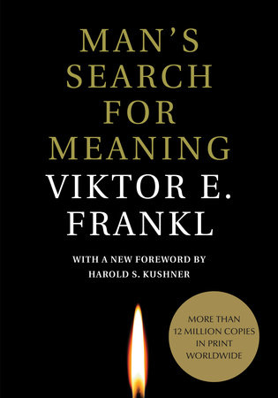
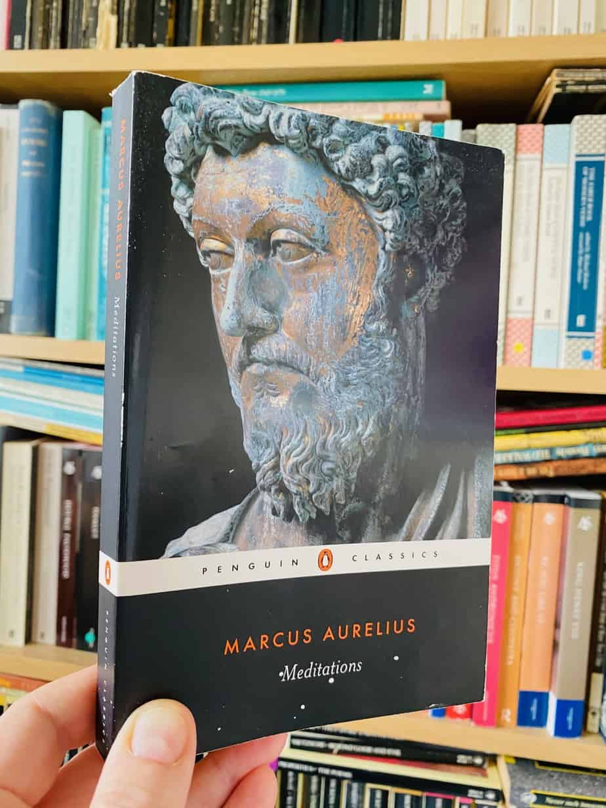
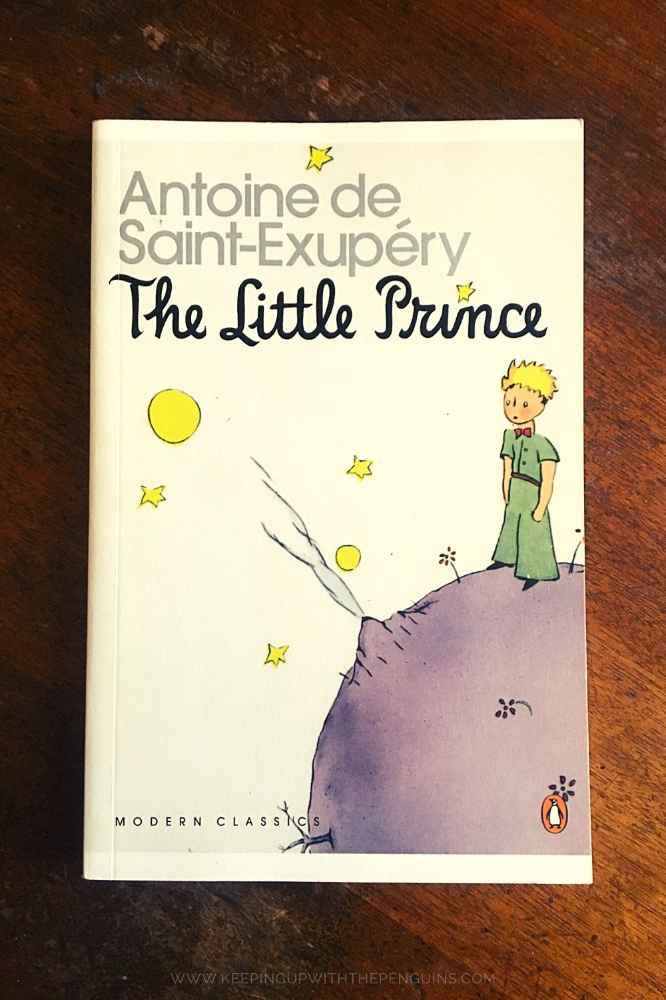
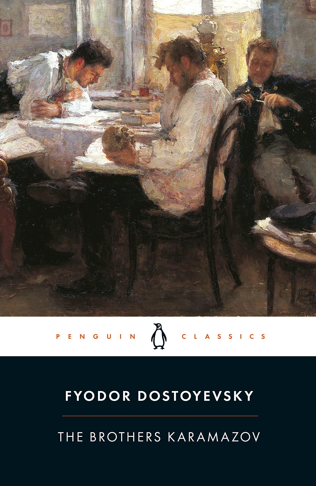

My blog about books
Its like a journal or a blog to keep track of everything that I've read. Also a way to share my recommendations and receive yours.
Reviews

“Everything can be taken from a man but one thing: the last of the human freedoms—to choose one's attitude in any given set of circumstances, to choose one's own way.”

“Dwell on the beauty of life. Watch the stars, and see yourself running with them.”

“It is the time you have wasted for your rose that makes your rose so important.”

“The mystery of human existence lies not in just staying alive, but in finding something to live for.”
The man who comes back through the door in the wall will never be quite the same as the man who went out.Aldous Huxley